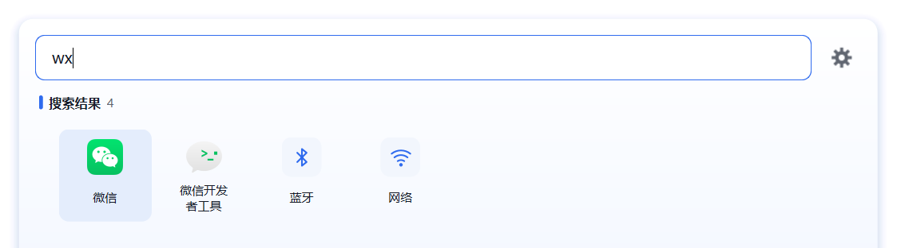
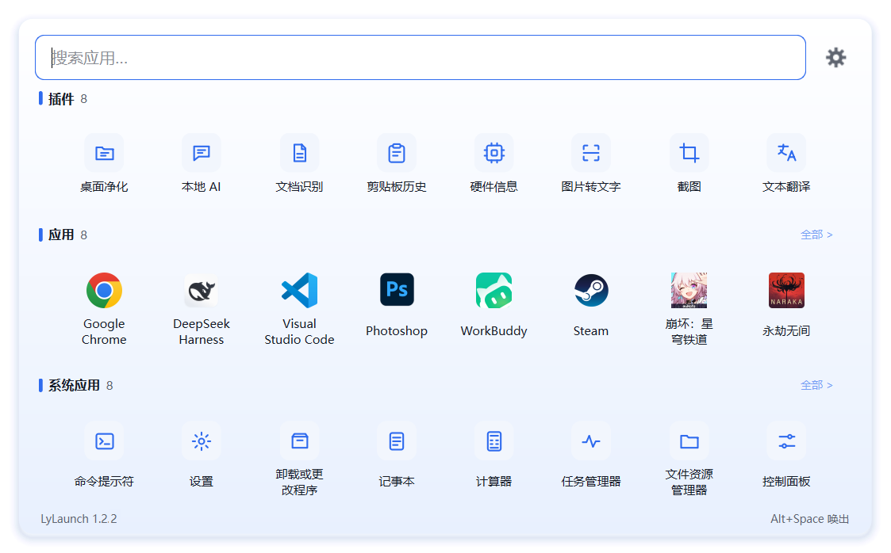
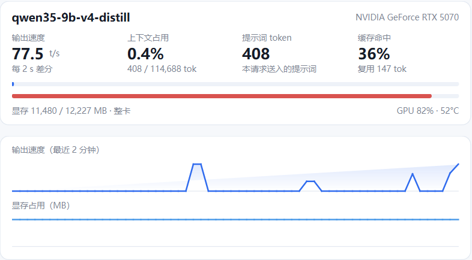
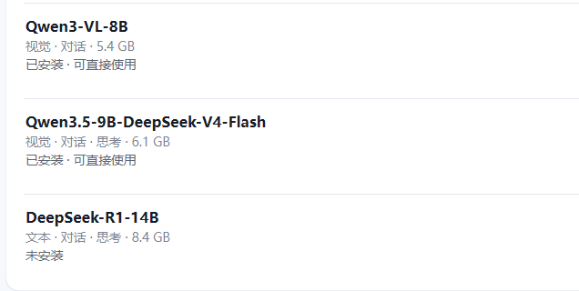
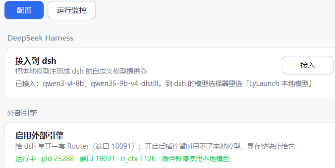

文本翻译
复制或输入一段文字，一键翻译。默认离线 Argos（约 70MB，免 key；可切腾讯混元 Hy-MT2 1.8B / 7B，长句与专业内容更稳）。
离线3 个模型
一个热键，把桌面收进一个搜索框。
插件即可能，你的需求由你定义。 Build it. Plug it in.
Windows 10 / 11 · 64 位 · 纯本地，不联网
01Features · 功能
不用记软件装在哪，也不用一层层点进设置。首字母、全拼、英文名或者中文都认，敲一个字母结果就跟着收窄，回车直接启动。

| 输入 | 命中 | 为什么 |
|---|---|---|
wx | 微信 · 微信开发者工具 · 蓝牙 · 网络 | 拼音首字母；蓝牙、网络的别名带「无线」，也一起命中 |
fy | 文本翻译 · ComfyUI | 插件的关键词「翻译」优先；ComfyUI 是名称里正好含 fy |
jt | 截图 · 图片转文字 | 名称首字母；后者靠插件关键词「截图识别」命中 |
tpzwz | 图片转文字 | 连写首字母串，不用空格也不要求分段 |
set | 设置 | 系统应用带英文别名，不必先想起它叫「设置」 |
blue | 蓝牙 | 别名里写了 bluetooth，打前半截就够 |
02Interface · 界面
常用软件、系统工具、文件、插件全部收在同一处。按下全局热键唤出，打拼音、英文或中文都能搜到，回车即启动。不用登录，不传数据，装完就能用。

输入 wx 直接命中微信，中英混写、首字母连打都认，不用记快捷键。
直接取程序自己的图标资源，不是截图拼的图标包，装新软件自动就有了。
想把常用的排前面，直接拖过去就行，顺序会记住，下次打开还是这样。
没有账号、没有云同步、没有埋点。模型也是一次下载，之后全程离线。
每个插件都是一个独立的小工具，从启动器里直接打开，不用去开始菜单翻。需要本地模型的两个——翻译和识别——也只下载一次权重，之后完全离线。
复制或输入一段文字，一键翻译。默认离线 Argos（约 70MB，免 key；可切腾讯混元 Hy-MT2 1.8B / 7B，长句与专业内容更稳）。
从截图或图片里提取文字。默认 PP-OCRv6（约 30MB、毫秒级），小图自动放大、按阅读顺序重排；可切大模型识别表格与公式。
批量拖入 PDF、图片、Excel、Word，表格还原成 Markdown，公式和手写都能读，输出可以直接用。
在软件里和本地大模型对话，不用联网，也不用另装 Ollama。会话存在本机，可以单独备份或删除。
框选即复制到剪贴板，支持多显示器与 HiDPI。单击截整屏，Esc 取消，热键可以在设置里改。
复制过的文字都记着，按时间倒序排列。双击或回车重新复制，支持搜索、单条删除和清空。
桌面文件按类型一键收纳，随时整体移回。两套皮肤，毛玻璃那套背后画面一动就跟着变，字色随壁纸自动切深或白。
游戏运行时在屏幕角落或顶部叠加实时 FPS、1% Low 与 GPU 占用。基于 PresentMon 取数，不注入游戏进程。
处理器、主板、内存、显卡、存储，一眼看清本机配置。只读，不改任何系统设置。
LyLaunch 内置一套本地推理引擎，OCR、翻译、多模态三类能力各配一个模型就能用。模型支持一键安装，全部在自己电脑上跑，断网可用，图片与文档不上传任何服务器。
内置 = 随安装包附带，无需下载；其余模型在设置页按需下载，可随时卸载。量化统一为 Q4_K_M，显存按 12 GB 显卡实测估算，供参考。模型图标为各厂商商标，此处仅用于标识型号来源，版权归各厂商所有。
装好的模型，在设置里点一下「接入」，dsh 的模型选择器里就多出一组「LyLaunch 本地模型」。接进去的两个都带视觉，能读图也能聊天；它到底在跑什么、吃多少显存，同一页的监控面板都写着。


要接的是「视觉 · 对话」这两个，装完直接显示 已安装 · 可直接使用。没装的模型不会出现在接入列表里。

同一页能看到接入了哪几个、引擎在不在跑、上下文给了多大。改完上下文要按重启才生效。

选择器里会多出一组「LyLaunch 本地模型」，和云端账号并列。选中之后所有请求都走本机。
速度、显存与缓存命中均为实机读数，会随模型大小和显卡不同。
06Release 1.2.0
1.2 没有堆新功能，主要把「设置」和「插件」这两块长期将就的地方整理干净。已安装的用户直接覆盖升级，个人数据与已下载模型都不动。
设置页两栏化：八个分区、左侧图标导航、切页淡入；每个分区独立滚动。
插件管理并入设置：取消独立窗口，换成一页列表 + 包库，安装、更新、卸载都在同一处。
插件快捷键搬家：集中到「快捷键」页，改键后即时重注册，不用重启程序。
新增开发者页：日志目录、导出诊断包、重置本机数据，从「关于 / 数据」里拆出来。
首页与排序：插件固定一行 8 个；「应用」「系统应用」也支持拖动排序，重启后保持。
关闭窗口可选：退出程序或最小化到托盘，默认退出，两种情况下托盘「退出」都能真退出。
07Download
装完按 Alt + Space 唤出。Windows 提示「已保护你的电脑」时点「更多信息 → 仍要运行」——程序没有购买代码签名证书，安装包本身没被改动。
C:\Program Files\LyLaunch。%LocalAppData%\LyLaunch，升级不动，模型不重下。